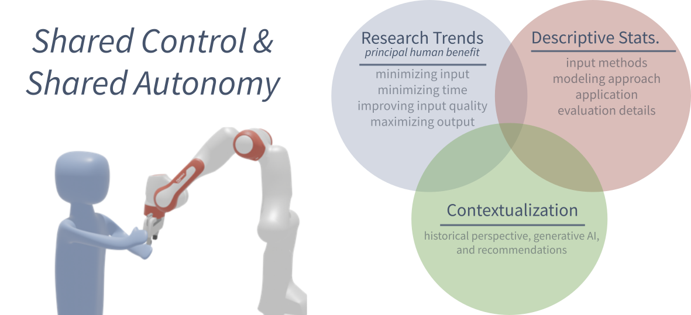

Shared Control/Autonomy: A Historical Perspective, Current Trends, and the Role of Generative AI

Overview
In shared control and shared autonomy systems, humans collaborate with robot agents to achieve common goals. Research in this area dates back over 40 years, with numerous applications, such as in manufacturing, robot surgery, and assistive technologies. Shared control approaches have even seen some commercialization efforts in areas like semi-autonomous driving and automotive assembly. Recently, shared control and shared autonomy approaches have gained significant traction, with hundreds of new methods published in scientific papers each year. In this paper, we examine recent approaches and trends in these methods, investigating several crucial aspects that are underexplored in previous surveys. First, we provide descriptive statistics and trends related to human input methods, technical approaches, and applications. Second, we examine the growing role of generative artificial intelligence approaches in shared control and autonomy. Based on these insights, we offer updated recommendations for future approaches.
Interactive Table
Citation
@article{hagenow2025shared,
title={Shared Control/Autonomy: A Historical Perspective, Current Trends, and the Role of Generative AI},
author={Hagenow, Michael and Selvaggio, Mario and Yu, Xuehui and Wang, Yanwei and Demiris, Yiannis and Bobu, Andreea and Du, Yilun and Soh, Harold and Losey, Dylan and Shah, Julie},
journal={Authorea Preprints},
year={2025},
publisher={Authorea},
doi={10.36227/techrxiv.176617724.41163595/v1}
}